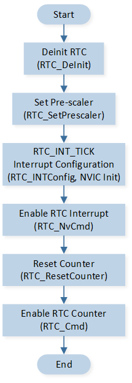

Tick
This sample demonstrates the tick function of RTC.
Every time the TICK timer expires, it triggers an RTC interrupt and enters the interrupt handling function, where relevant log information is printed.
Requirements
For requirements, please refer to the Requirements.
Configurations
The following macros can be configured to modify the RTC prescaler value.
#define RTC_PRESCALER_VALUE (3200-1) /*< Set this macro to modify the RTC Prescale value. RTC_CLK = 32k / 3200 = 10Hz. */
Building and Downloading
For building and downloading, please refer to the Building and Downloading.
Experimental Verification
After the TICK time (0.1 seconds), trigger an RTC interrupt and print the interrupt information.
RTC_Handler: RTC_INT_TICK
Code Overview
This section introduces the code and process description for initialization and corresponding function implementation in the sample.
Source Code Directory
The directory for project file and source code are as follows:
Project directory:
sdk\samples\peripheral\rtc\tick\projSource code directory:
sdk\samples\peripheral\rtc\tick\src
Initialization
The RTC initialization flow is shown in the diagram:

RTC Initialization Flow
Call
RTC_DeInit()to reset the RTC peripheral.Call
RTC_SetPrescaler()to set the RTC prescaler.Call
RTC_INTConfig()to enable the RTC TICK interrupt, and callRTC_NvCmd()to enable the RTC interrupt function. For NVIC related configuration, refer to Interrupt Configuration.Call
RTC_ResetCounter()to reset the RTC counter, and callRTC_Cmd()to enable the RTC peripheral.void driver_rtc_init(void) { RTC_DeInit(); RTC_SetPrescaler(RTC_PRESCALER_VALUE); RTC_INTConfig(RTC_INT_TICK, ENABLE); /* Config RTC interrupt */ NVIC_InitTypeDef NVIC_InitStruct; NVIC_InitStruct.NVIC_IRQChannel = RTC_IRQn; NVIC_InitStruct.NVIC_IRQChannelPriority = 2; NVIC_InitStruct.NVIC_IRQChannelCmd = ENABLE; NVIC_Init(&NVIC_InitStruct); RTC_NvCmd(ENABLE); /* Start RTC */ RTC_ResetCounter(); RTC_Cmd(ENABLE); }
Functional Implementation
Every time the TICK setting time elapses, it will trigger an RTC interrupt, print the relevant status in the interrupt handler, and clear the interrupt flag.
void RTC_Handler(void) { /* RTC tick interrupt handle */ if (RTC_GetINTStatus(RTC_INT_TICK) == SET) { DBG_DIRECT("RTC_Handler: RTC_INT_TICK"); // Add application code here RTC_ClearTickINT(); } }
See Also
Please refer to the relevant API Reference: